来源：https://jcn4pvtuwhaq.feishu.cn/docx/TlZodgqq3oys4cxd9u3cYCzzn3g
大家好，我是Dustin，可以叫我达斯汀，99年少年，来自广东中山
5月23日加入生财的新人，明天就刚好来到生财3个月了
如果你是新人，刚进来不知道做什么好，可以参考我的帖子，看看我是怎么做的
如果你想做小红书虚拟资料，不知道选什么赛道，也可以参考我是怎么选赛道的
想直接看实操可以跳过以下自我介绍，因为写完发现真的有点长哈哈哈哈
首先，想自我介绍一下
20年毕业，网建专业，对口工作不好找，本身也不太感兴趣，就在家附近先找了家母婴公司做打单员（其实就是打快递单）月薪4k单休。
知道自己不能这样下去，于是学习了理财，了解了基金、股票、债券等等相关知识，后来就是定投基金
但这只是理财，没有更好的收入来源，是没多少财可以理的，又开始找更好的工作机会，想起市面上有好多编程培训，打算自己自学。
一开始选择了python，后来发现就业机会少，不如java，于是选定了java，每天工作时 大概就3小时在干活（因为我效率太高），其他时间都在学java，下班回家也是在学，很累。
2个月后差点放弃了，但是女朋友鼓励我，继续坚持了下去，直到4个月，完整的学完了，开始写简历去广州，0经验找到月薪5k双休的工作
带着我的一万存款去了广州，每个月税后4k在广州吃住还能省下1k多，就这样坚持了一年，带着工作经验回到了中山，找了个双休工作，还是更喜欢这边低成本的生活。
就这样从22年到现在，一直在做小程序+java程序员的工作，看到房价跌，车价跌，感觉自己有这点稳定收入已经很知足了，可以躺平了，按工龄来说是4年工作经验的程序员，但我没有任何上进心，一年经验三年用，没有任何进步可言。
后来家里缺钱，以及面临过几年就要和女朋友结婚还有未来的买房，发现自己这点收入真的太微薄了，根本支撑不起我的未来，所以决定尝试找一份副业。
做过web3投资，亏损2w+
做过抖音书单号，投流玩法，资金不充足导致不敢操作，也没玩起来，算上学费、个体户代理记账等花销也是亏损8k+
花钱报名参加割韭菜培训营，就是写各种好像能赚到钱的项目，做视频发到各种网赚网站上，里面带上自己水印等人来加微信，最后引导他做跟你一样的活，我没有成功拉到过一个人，也觉得太害人了没有做，亏损3k+
于是我就害怕了，我真的不能再这样下去了，我更谨慎了，我观察了生财半年，再参加了体验营 感受到生财是真正的我需要的知识社群，我坚定的加入了社群，并且在体验营拿到了新手术值排行第一名，获得了400元优惠券
加入生财以后，真的眼花缭乱，好多好多有价值的文章，大片大片的摆在面前等我去看
按小排老师的文章，我通读了各种赛道的一些文章，最后找到自己感兴趣的
小红书虚拟资料 优点：正反馈快，门槛低，可以矩阵放大
出海web 优点：天花板高，我有程序员底子学习更快
正好开了6月航海，我想两个都报，但又怕精力不够，于是询问了纪钟老师，我应该报什么，最后建议我去出海web，因为这两个航海的技能不互通，直接选天花板高的一路走到底更好，于是我只报了出海web
航海启程令人兴奋！成功打够卡了，航海也结束了，我发现自己只会上站，但不会找需求，于是加入哥飞社群寻求帮助
2个月后，我的结果：我真的不会找需求，我放弃了，但学到的知识，都是对我的认知提升
复盘了这两个月，我大概知道自己问题出在哪，我只看到了项目的优点，却忽略了项目的难点，或者说我忽略了我不具备的能力，明明手册和各精华帖都已经说明了，需要会找需求或抢新词能力，但我选择项忽略了
正好工作越来越不顺心，公司营收压力大，一层压一层，工作越来越难做，我想早日逃离公司的束缚，我也想要自由，我知道我现在需要的是一个正反馈快的项目了
尝试了网盘拉新 0变现
尝试了外卖cps 一个月100多元，还算不错
当时总觉得还是不对，找不到适合我的放大方法，便停下了继续操作，但后来我总结是ego太高作祟，让我没有继续深耕，明明有好的方向就是没做下去。
后来在翻了各种精华帖后，把方向放在了youtube和小红书虚拟资料上，为什么会有youtube，可能是内心的出海愿望还在若隐若现吧，美金真的很香啊
因为youtube，我选择了小红书虚拟资料，为什么？因为逸尘老师，他真的好年轻，06年的，而且他的文笔好好，写的都好精炼，我写不出来这样的文章，还要继续学习。
有点扯远了，继续说原因，我翻youtube精华帖时候，翻到了他的帖子，看到了一篇
《我是如何从一看生财就焦虑，2个月内实现Youtube1.5亿播放量，赚回“2倍”门票？》
（不知道直接引用文章链接会不会侵权？我就不放链接了，大家感兴趣可以自己搜一下）
正是这一篇中的一句话，“每天看10个风向标”。让我开始每天看风向标，以前我都不看的，只在体验营期间随手看了几眼，没有太关注，后来我就天天看
直到有一天，我看到了“百哥”发的一个风向标《短篇小说小红书卖出7300份》，我看到以后就去小红书搜索对应账号，发现好像没有太多人做这个，生财都搜不到相关帖子。
但这个销量好高，好赚钱，是不是就是异常值呢？似乎这就是老师们经常说的，在红海中找到蓝海赛道，我认为这是一个蓝海赛道，我想试试！
确定好要尝试去做以后，我把小红书航海和ai写作的航海简单看了一下，就开始实操了
这是实操的第一天发布的笔记，8月7日，第一篇小说我是用来起号的，直接把整篇内容都发出来了，分开了很多篇笔记，到8月10日，3天发完。
然后是8月12日，发第二篇小说，可能是因为完成店铺任务给了流量，然后爆了，开始出单，之后每天持续出几单
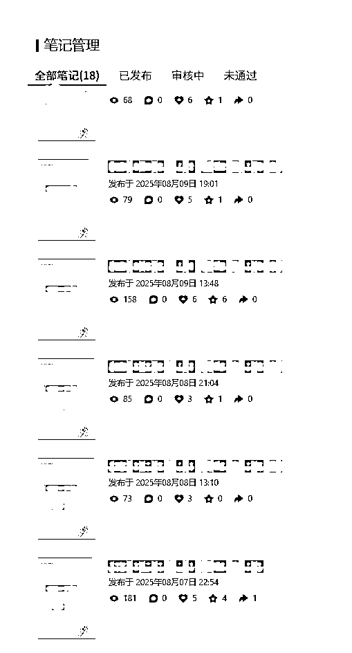
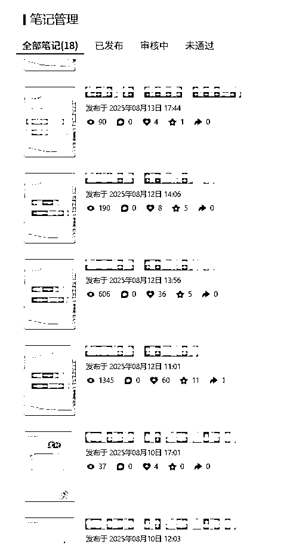
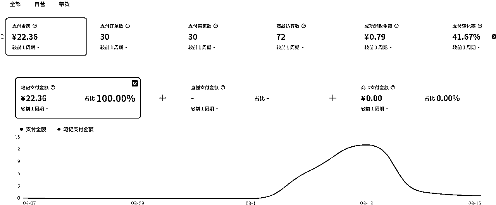
先介绍一下这个项目：
1、只需要免费AI就可以完成
2、初始设置搞完以后，每天操作只需要十几分钟都够了（我暂时只有1个号）
3、需要坚持，不要气馁（什么项目都是这样的）
4、单号天花板不高，但可以矩阵放大
久等了，终于要开始教学啦
这个不难吧，就不教了
小红书虚拟资料航海手册就有，pc端和手机端都有教程，我这里只放手机端的，pc端大家可以到航海手册里看教学
打开小红书，依次点击 左上角三条杠——创作者中心——全部服务——开通店铺——立即开店享收益
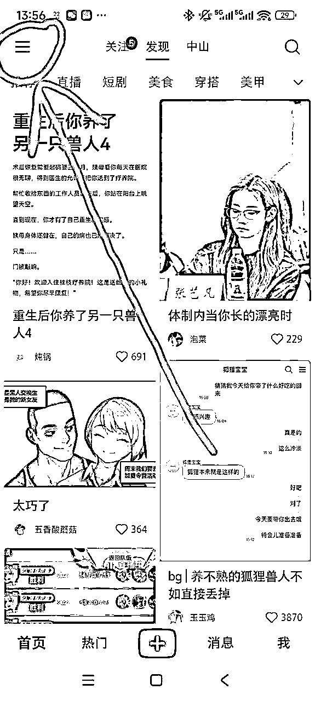
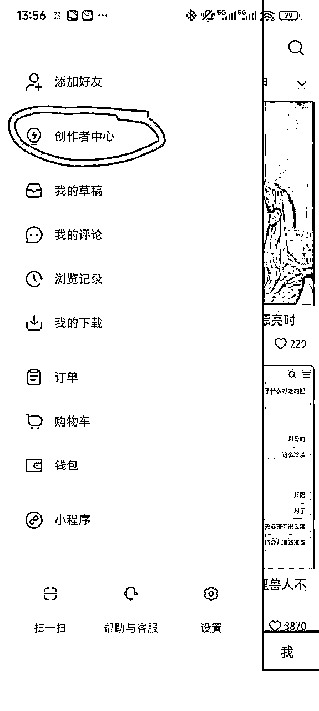
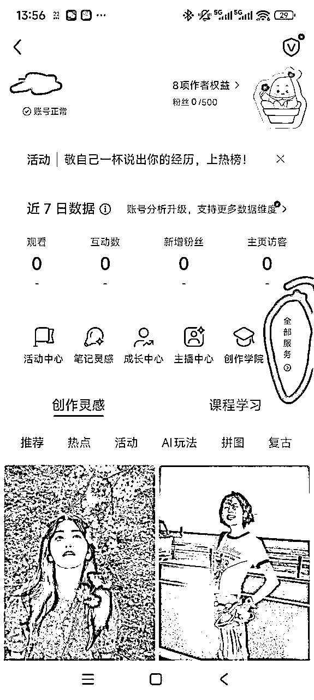
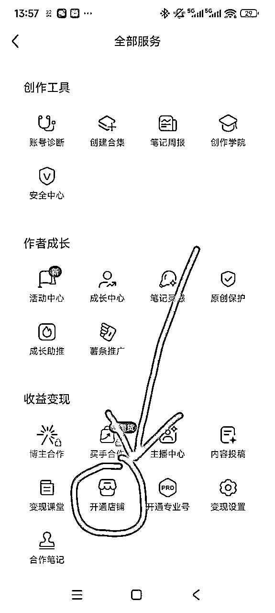
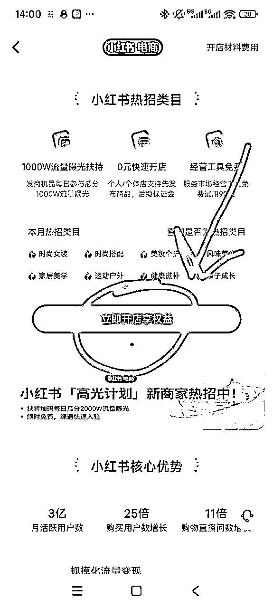
点击开店以后让你选个人和企业，一般我们新手直接选个人就好
以后想矩阵放大时候需要有营业执照用企业注册，这是新人第一个月不用考虑的问题，等你成功变现，有正反馈到手了，能单号月入上千了，再去考虑如何放大，生财有无数的精华帖教你怎么去放大，但现在看了只会让自己焦虑。所以新手一定要一步一个脚印，从0起步，踏实的走向1
接着上传身份证，市场主体登记证明选择“属于零星小额交易活动，依法无需班级登记”就可以了，提交审核，等消息吧，我记得挺快的
保证金可以不着急交，等需要提现时候再交就行，或者直接等里面的钱到500 直接可以抵掉
开通成功后，需要下载“小红书千帆”APP，有些设置项小红书APP里看不到。
打开小红书千帆APP，在首页依次点击 全部工具——物流设置
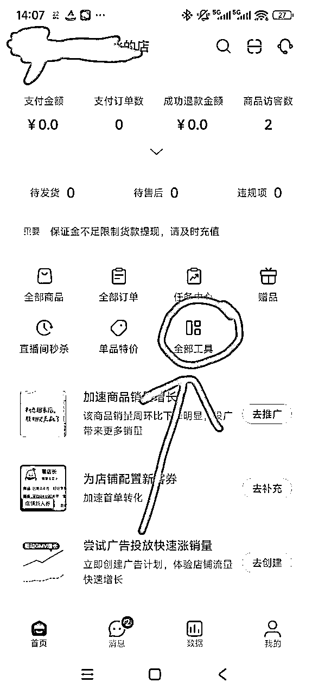
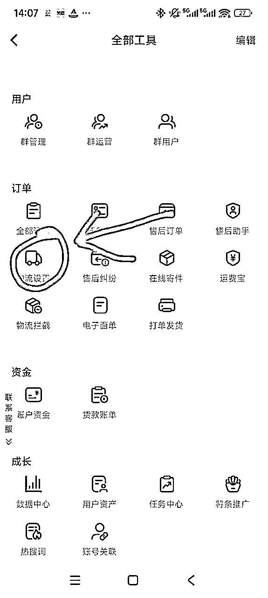
进入后在地址管理，点击添加地址，写个你家附近的随便地址就可以，没关系的
留言给买家：这个我没有填
保存，回到地址管理页面
再点击上面的物流模板，然后点击底下添加物流模板，
模板名称：你随意
贸易模式：一般模式
物流模式：普通内贸
发货地址：选择你刚刚添加的地址
保存，你就完成了开店了
接下来的目标是找对标账号，对标小说
找一个你觉得能吸引你的笔记，并且赞多评论多，点进去主页，赞比粉丝多的账号
这就是我们要找的账号
直接搜“乙女向小说”，然后随便点开一篇笔记，然后找到他笔记里的标签，点进去，到标签聚合页面，从里面一个个找最火的最多赞的（有的是刷赞，可以看看评论有没有活人判断），然后关注他，多看多关注
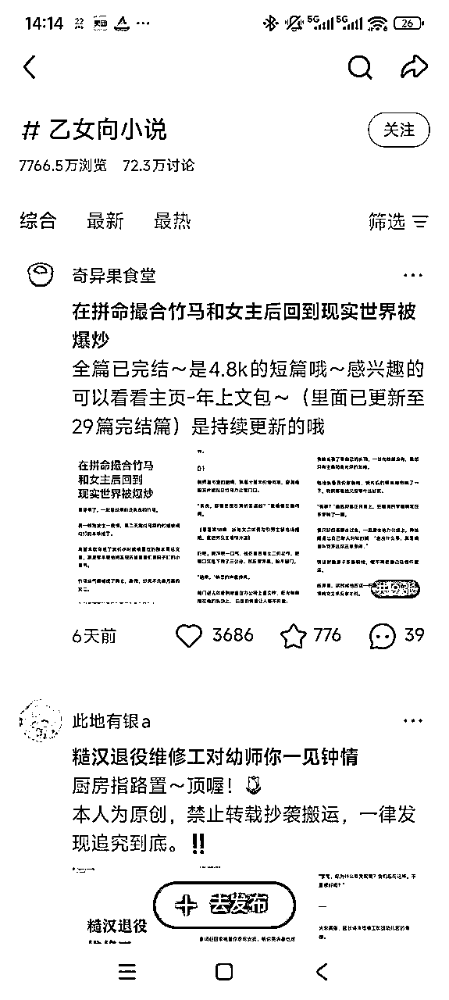
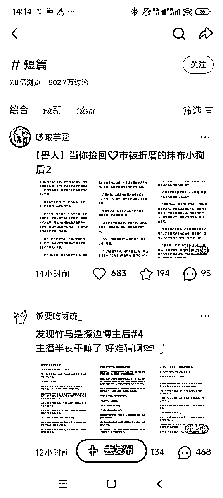
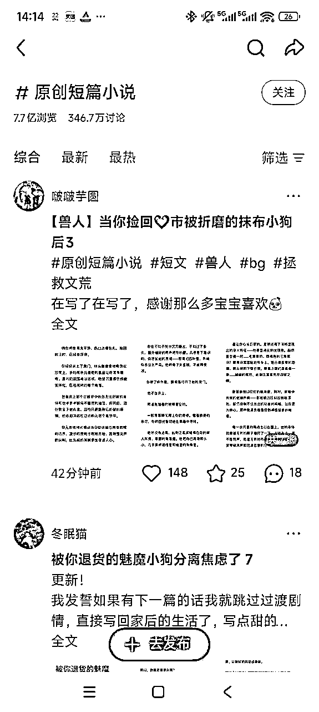
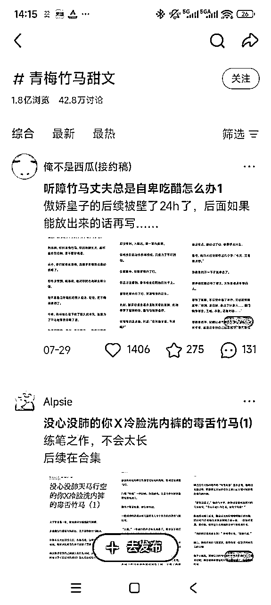
还可以根据对标账号的关注列表，去找到他们找的对标，我就是这么找的，这些都是我找到的对标，还有很多很多，最好去找那种有挂店铺链接的，看看他们销量好的是什么题材的文章，都收藏下来，之后会用到
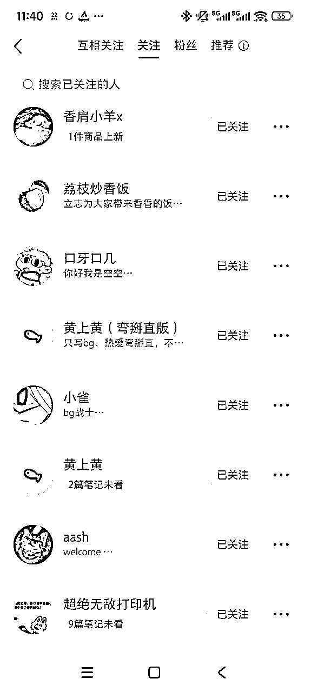
等你关注多了，看得对标笔记多了，首页就会给你推了，都点进去看看，有什么好题材就收藏一下，都是之后有空会用到的
找一篇销量好的，或者特别多点赞的小说笔记，把图片都下载下来，我用的是浏览器的插件 AIX智能下载器
对了，如果是销量好的小说，那笔记里的小说内容一定是不完整的，但是不完整的小说也没问题，后面会讲
具体操作流程
打开笔记页面，点击插件，点击全选，去掉前两张，因为这两张是重复的，下载
图片按顺序上传到豆包，让豆包图片转文字
把整个小说都转文字以后，保存一个txt文档到电脑里，进入下一步
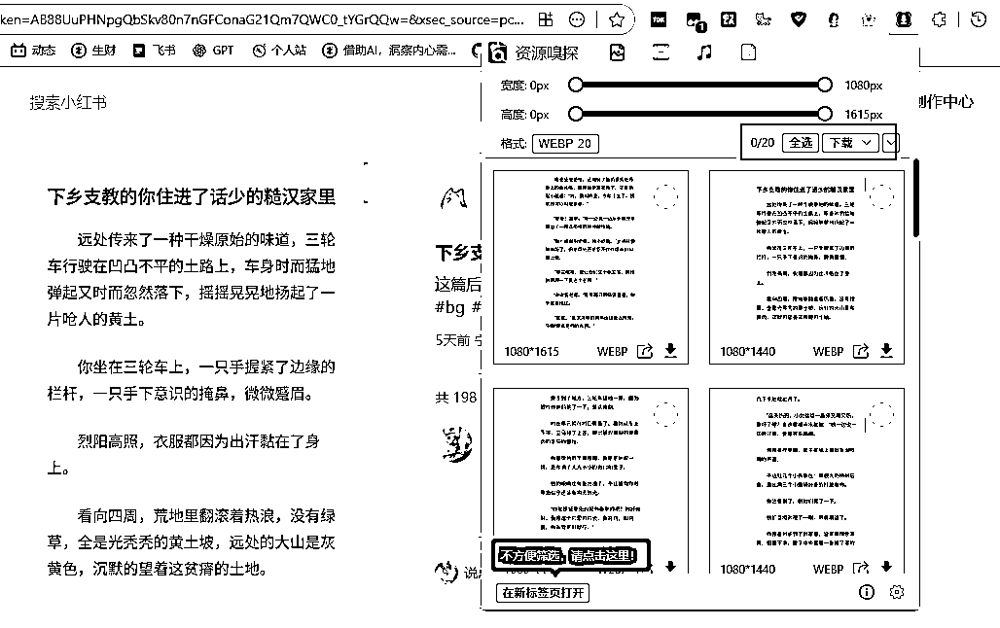
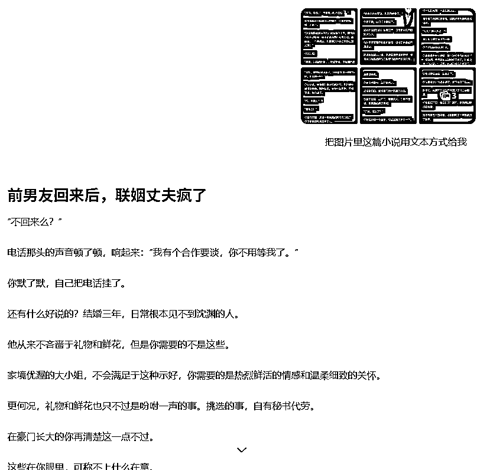
这时候我们需要找一个更聪明好用的AI帮我们总结小说，
首选是GPT、claudeCode
次选是deepseek （如果没有环境使用gpt和cc的话 这个也够用了
我用GPT举例，而且是用不完整的小说举例
因为是免费的，所以使用额度比较少，我为了节约额度，是把txt文件不直接发给GPT，而是直接复制文本发给他，我找的是一篇销量好的笔记小说，没有买完整版，只拿了笔记里发的内容，直接给GPT，告诉他
“这是一篇不完整的bg短文小说，帮我续写，并且是happy end结局”
在他续写完以后，补充到我们的txt文件里，再次把完整的文本发给他，并且让他总结
"""这是一篇刚刚在小红书看到的爆款短文，我需要你帮我总结为什么爆款，为什么那么多人喜欢，列出来原因，并且仿写出一样的爆款短文，字数要跟这篇差不多，可以先列一个大纲"""
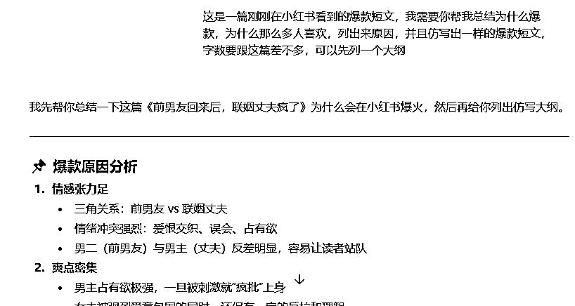
到这里，我们小说的大纲已经出来了，你可以根据大纲看看是否合理，是否能吸引人，能不能吸引到你去想看剧情如何发展，如果有吸引力，那就成功一大半了，知道吗，最难的创作部分你已经成功了！
接下来就是让AI写出具体小说内容，我一般控制在1w+字左右，有时候可以PUA一下AI哈哈哈
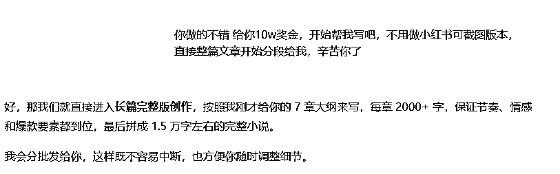
你可以根据你的想法，让AI修改每一个篇章字数，改一下大纲，改一下角色名，什么都能按你想法去优化，最后你要记得让AI看看你的想法时候合理，只要他觉得没什么问题，就可以让他输出小说了。
我会让AI每次输出一章节，这样能保证每章节字数足够，因为之前试过一次全出，结果就是输出字数远远不够，剧情不够精彩。
一定要每一段小说内容都自己检查清楚，不要有不合理或者涉及敏感词的内容出现，出现就让AI改。
我这里的提示词还有很多优化空间，大家可以发散自己的想法，吸取圈友们的提示词技巧，做一份适合自己的提示词
完成这一篇小说之后，新建一个新的txt文件，完整的保存到你网盘，这时候甚至可以搞个网盘拉新，用夸克网盘哈哈哈，当然这是题外话了，我是用百度网盘
打开千帆APP，依次点击——全部商品——发布商品
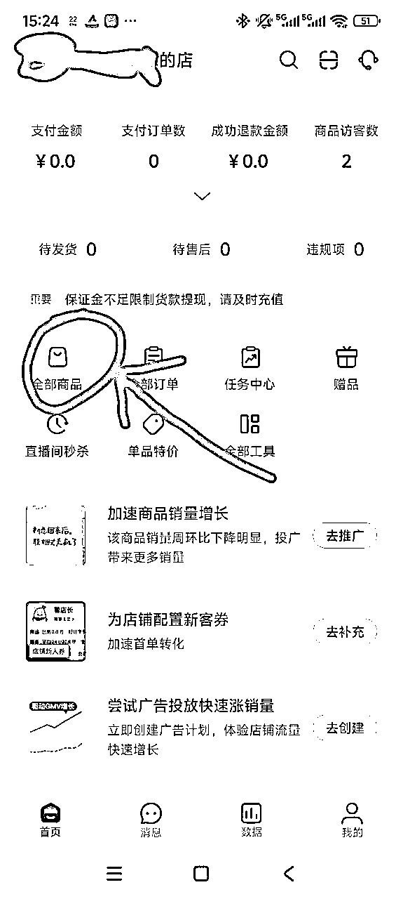
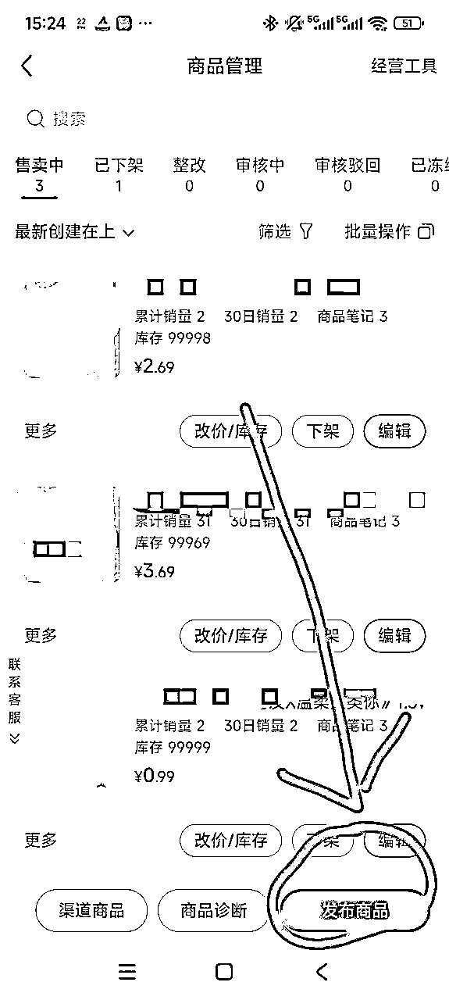
这时候需要商品主图，我一般是直接用的小红书生成的图，有很多对标都是直接没有封面图，直接用小说内容截图做封面图，也是可以的
如果要用小红书生成的图的话，打开小红书APP 依次点击底部 “+”号——写文字
然后在输入框里输入你的小说名，如果感觉不是很吸引人，就让AI帮你想，然后点下一步
生成出来的图喜欢哪个用哪个，可以用截图，也可以发个私人笔记保存图片，我一般直接截图
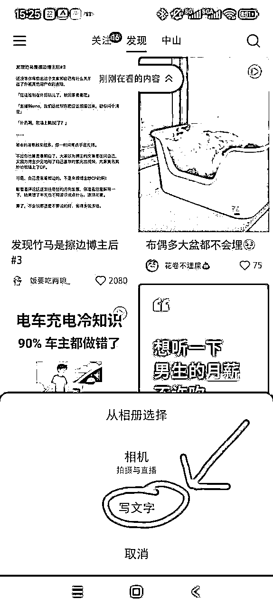
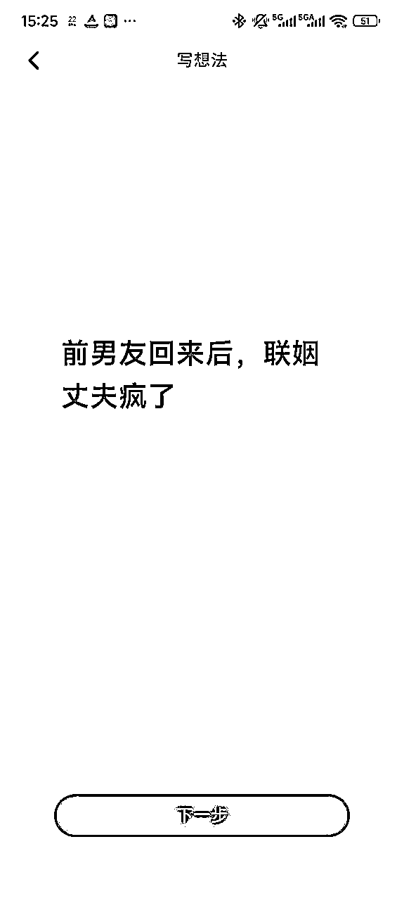
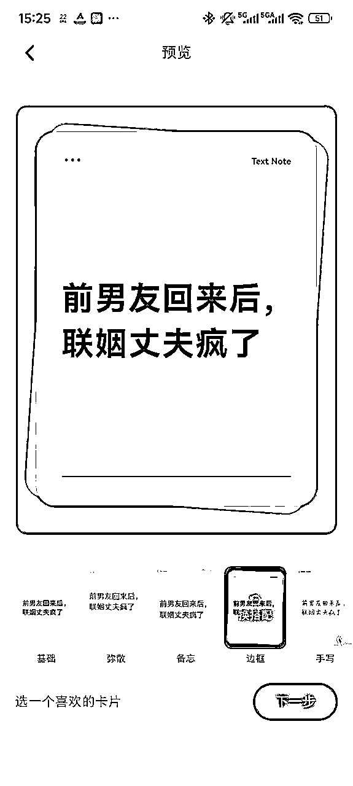
添加好主图以后，就是标题，我一般是 《小说名》1.2w字完整版
这样子命名，让人可以知道整篇有多长
类目直接搜索电子资料包，选第一个
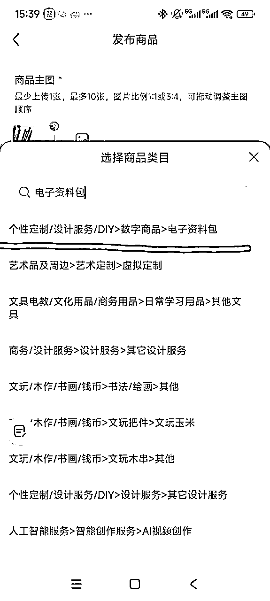
接着是详情图，我就放了两张图，都是抄对标的，大家也可以按这样放，或者看看对标有什么更好的详情图
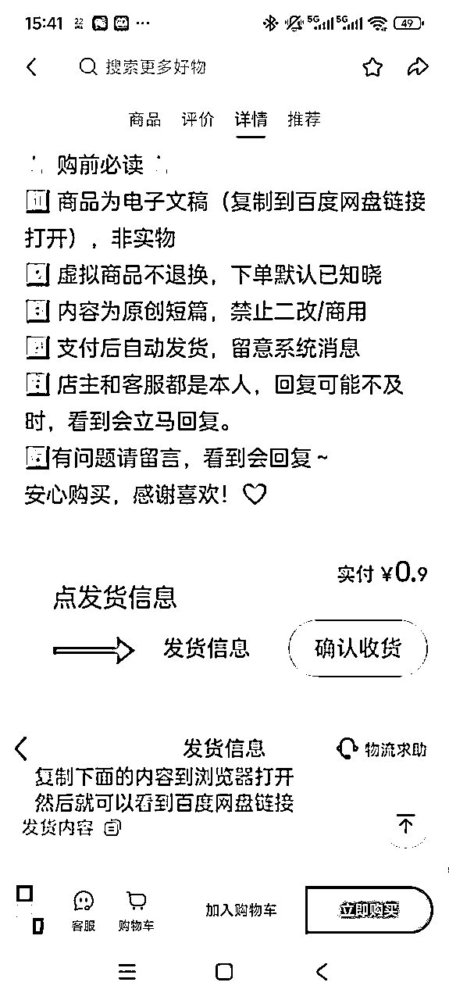
价格：我一般3.69或2.69，其实这里定价多少都无所谓，最后要去“单品特价”设置最终价格，这样让用户一眼看到优惠，能提高转化率
库存：一定要设置，我是设置了100000
重点 点击“继续丰富商品信息”，这里的一些设置可以提高转化率
物流类型：无物流发货或物流配送
物流模板：开店铺时候设置那个模板
运费模板：一定要选 全国包邮模板
发货模式与实践：一定要选 现货模式 24小时内
开售时间：审核通过后立即上架开售
售后服务：一定要选 支持七天无理由退货
上面标黄的都是很重要的设置，大家一定不要搞错，关于退货，其实不用怕，大部分都不会退，有人退就告诉买家这是虚拟商品，一经发货不予退货，如果买家找客服也不怕，目前我还没输过
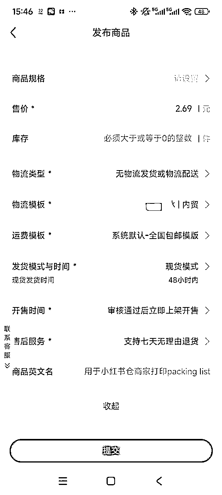
点击提交，等待商品审核通过，一般10分钟内都ok了
打开千帆APP，找到“单品特价”，“新建”
活动名：自己设置，无所谓
活动时间：想多久就多久，保存后也可以修改的
选择你的商品，如果商品有多个SKU还可以选择某个SKU
然后就是价格，一般定价有0.69的 有1.69的 价格大概在区间0.6-2以内，你看着来，字数多可以贵点，字数少就便宜点
全部设置完以后保存，审核通过以后，其他人看到的效果就是这样的啦
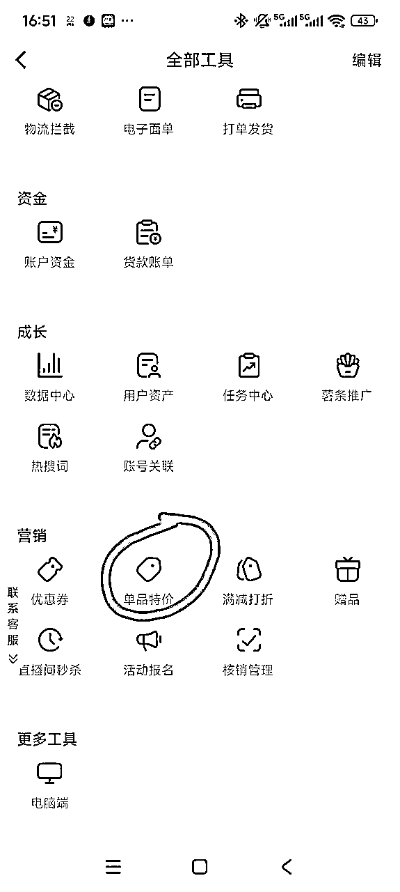
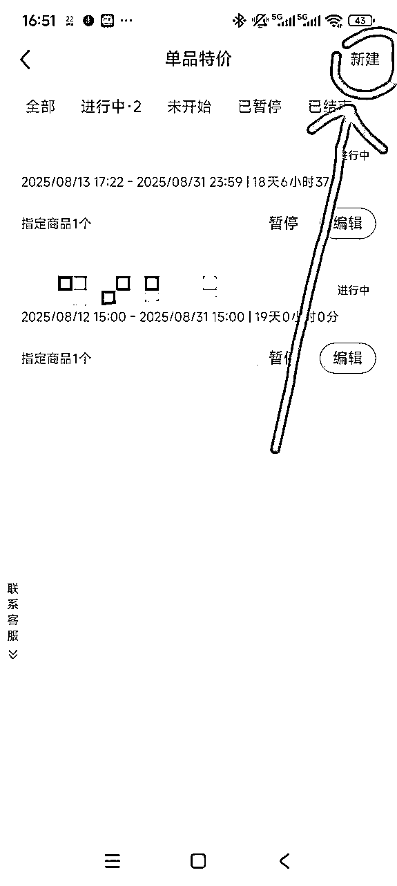
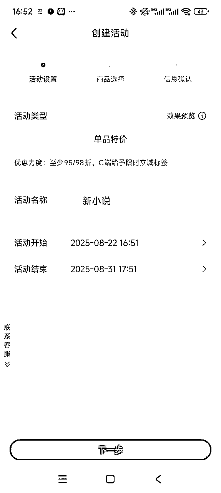
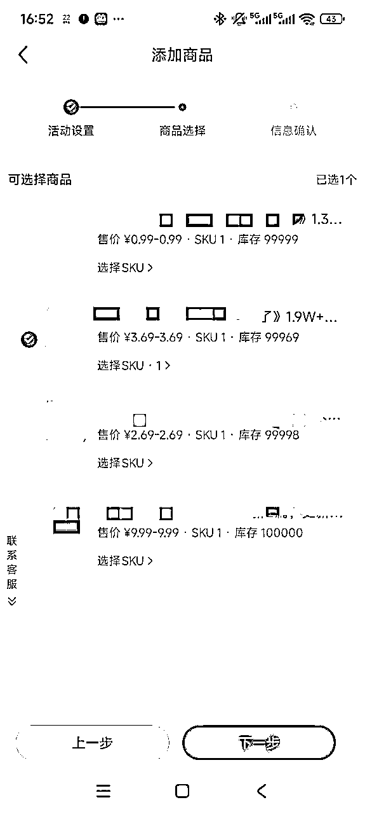
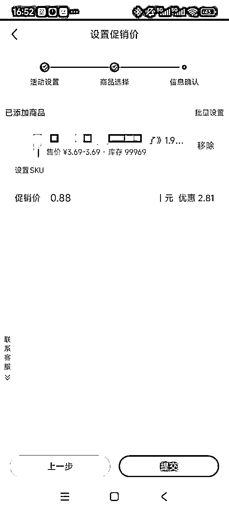
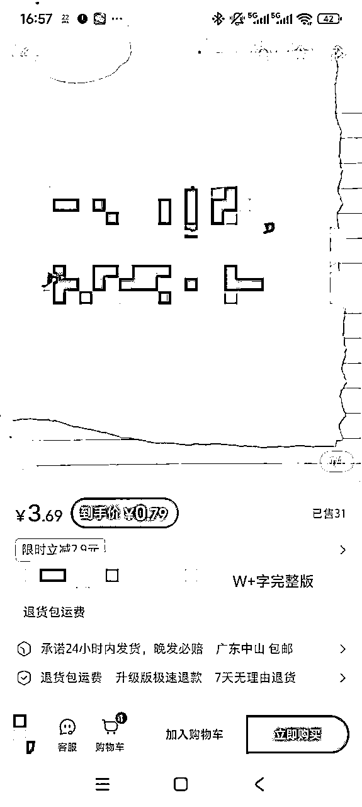
产品做好了，现在该搞流量了
写上你的小说名
重点 一定要在内容里打好标签，就是“#”井号后的那些标签
按你抄的对标那篇小说，有什么标签就复制什么标签，如果没用满10个标签，你可以去找其他对标抄几个
笔记图片其实很简单，只需要截图你的小说内容就完事了，有封面图就放个封面图，没有就直接把截图摆上去
那么小说内容截图从哪来，我一般是直接打开百度网盘APP，打开我存在网盘里的txt文件，它会自动变成小说模式，我只需要一页一页截图就可以了
那么顶部和底部的菜单怎么办呢，我是用美图秀秀的批量修图裁剪的，裁剪后的小说内容图片会工整干净一些
重点 发笔记前，一定要先去千帆APP看看有没有笔记任务，这个流量很香，很容易出单
领取任务后会自动跳到小红书，跳过去以后再发布小红书就是完成任务了，记得看清任务要求，有些任务有内容字数要求
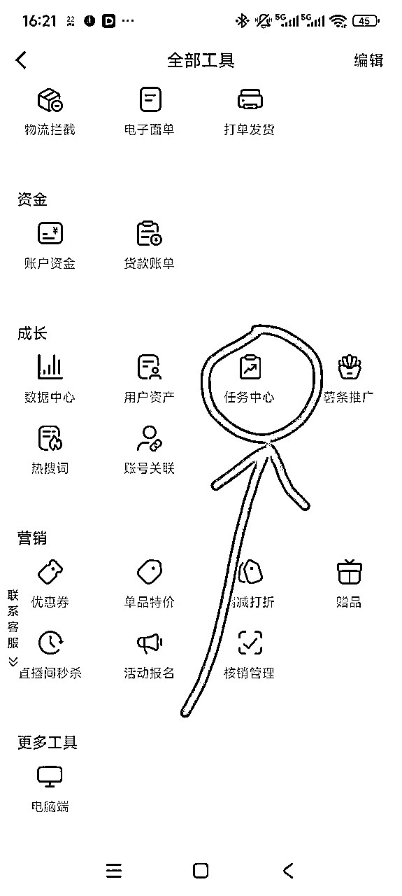
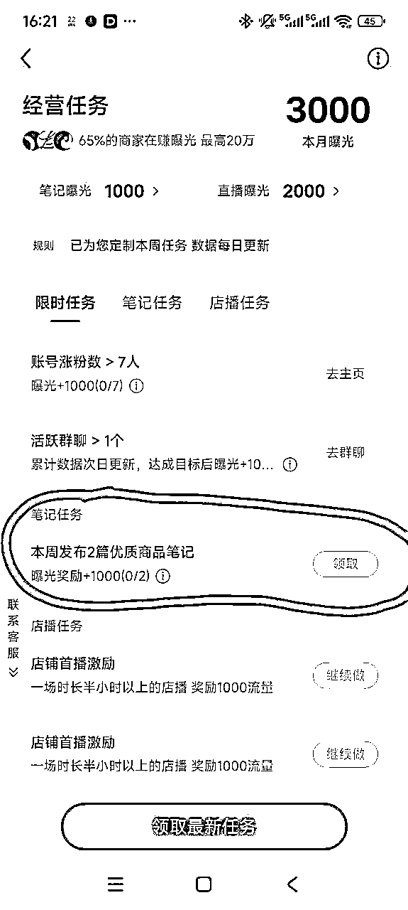
这个一开始可以不用搞，等开始出单了再搞，因为是有试用期的，到期了就要付费了，不过付费问题也不大，半夜来几单就把费用摊平了，更何况白天也不需要自己管了
我用的是阿奇索，航海手册里教的也是这个，好像只能电脑操作，APP我没找到入口
打开千帆网页版https://ark.xiaohongshu.com/
登录以后左边菜单栏滚动到最下面找到服务市场
搜索“自动发货”，这个图标就是阿奇索，点击进入阿奇索介绍页
点击前往获取
点击授权登录，就到阿奇索页面了
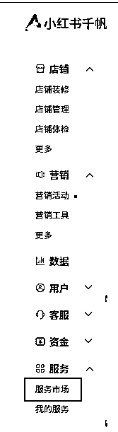
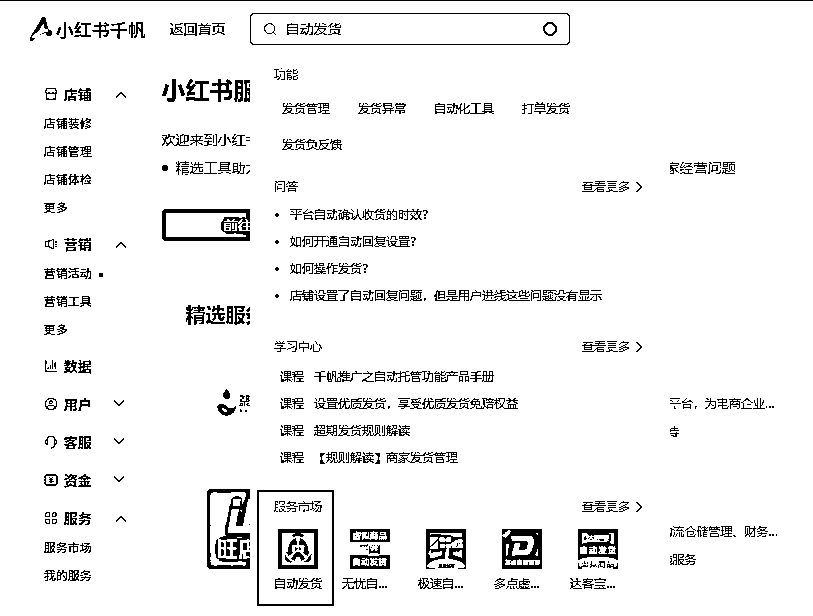
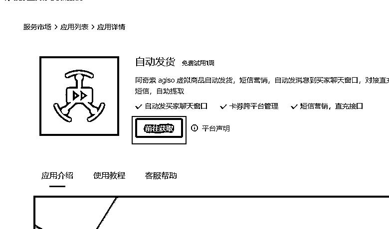
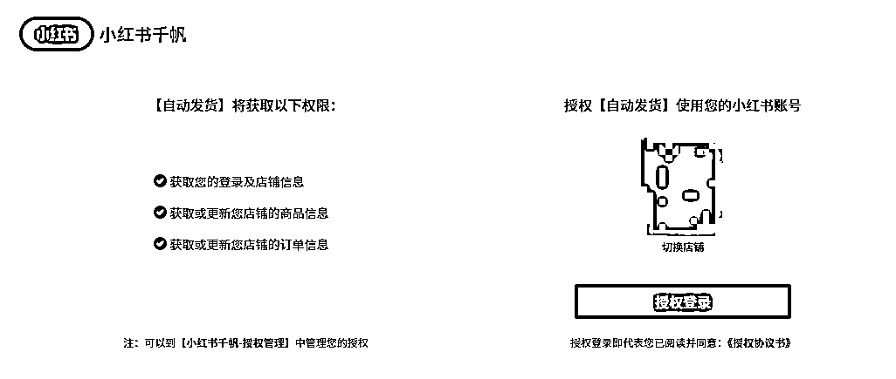
左边菜单找到商品设置
点击添加，选择你要自动发货的商品，确定添加，就会出现在下面的列表里了
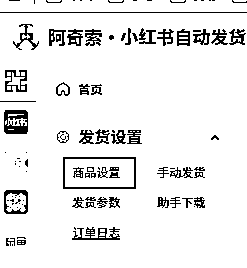
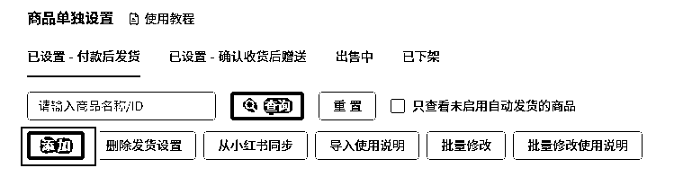
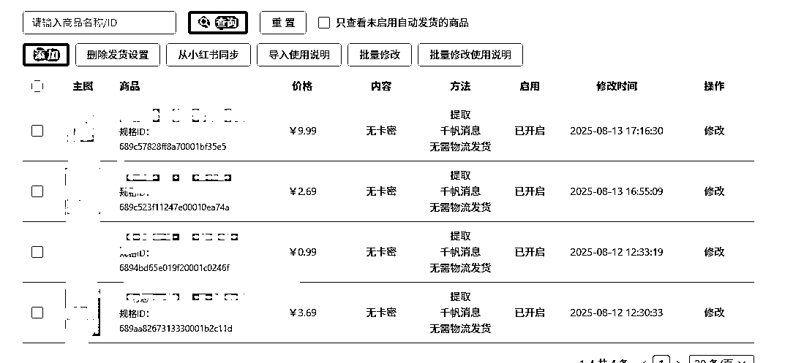
接下来我们需要设置自动发货时要发送的信息
点击某个商品右边的“修改”，就可以在里面编辑了
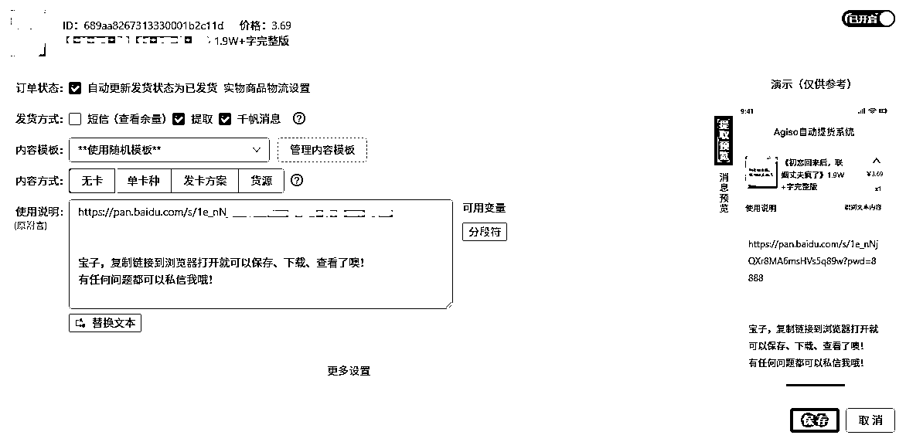
订单状态：必须勾选，不然你把东西发给人家了，还是未发货状态
发货方式：短信要钱我没勾选，另外两个我都勾选了，值得一提的是“千帆消息”，这个是发货时会私信买家一条消息，可以避免有些买家不知道怎么拿链接，他可以直接在消息看到我们的发货信息，但是必须要把阿奇索挂着才行，具体怎么挂等会说
内容模板：我选了随机，也可以选默认
内容方式：无卡
使用说明：这里就是发给用户的信息，以及发货信息，效果如下图
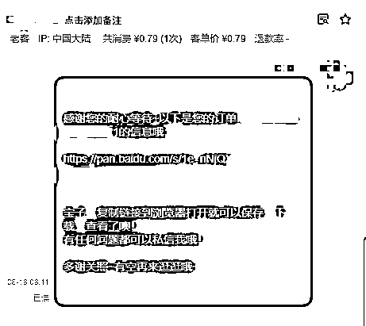
点击保存，就好了，你已经可以自动发货了
关于挂着发千帆消息的功能，需要下载阿奇索客户端
左边菜单找到助手下载，然后一路安装就行了，打开软件会提示登录千帆账号
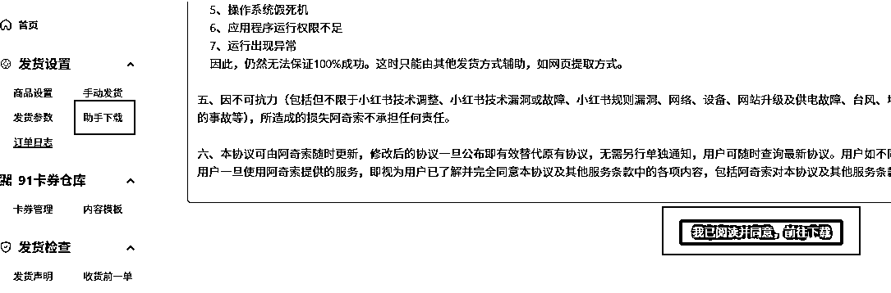
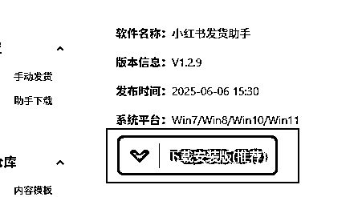
登录需要邮箱，到千帆设置一下就行
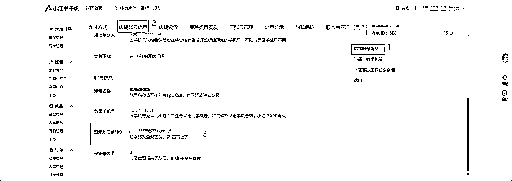
登录后只要客户端没退出，一直挂着就可以实现发货时自动发千帆消息啦
这个项目一定是可以快速变现的，至于能做多大，天花板多高，取决于你的执行力
但最有价值的不是这一个小小的项目实操，而是方法论，要多去看风向标，多去调研，多去尝试，找到自己喜欢的热爱的长期想做的项目才是最重要的，这才是能拿到大结果的必要条件
其实有时我在想自己是否在畏难，畏惧做矩阵，怕各种困难和新的知识让我太累，或许这个小红书小说坚持下去做矩阵会有更好的结果等着我，但我没有继续去放大，因为我发现了或许我有更好的机会，b站好物
最近我加入了b站好物深海圈，因为我熟悉b站，目前也没有太多人在卷，我想在这个暂时还没有太多竞争者的赛道，走到行列头部，实现我的自由
这个小红书小说项目打算给女朋友接手了，不然账号放着也没用，女朋友也有时间可以随手做做，增加点收入也是很好的
顺便说一下现状，目前工作状态很好，归功于第一条小灯塔，亦仁说过，做副业的同时，主业也要做好，于是我尝试工作时间不再消极，而是积极面对，感觉自己精神状态出奇的好，有空闲了就看看生财贴，操作一下副业。
以及发出这篇帖子的原因
之前看过一条帖子是，亦仁说沉默者是表达者的红利，我也要拿这一份红利，我要成为表达者
Youtube深海圈的Gary曹淦教练帖子说过，他也是发过帖子才被看到，才有了现在，我也想要被看到，我也要走向成功，我也要向优秀的人看齐，并且靠近，再实现超越！
最后，非常感谢生财这个社群！不仅提供了前沿的赚钱项目和认知，还有很多提高我们心力，调整心理状态，在昏暗时给我们明灯的分享，不管其他人怎么想，我觉得这对我来说，价值....我都没办法用量级去衡量生财为我带来的价值，这是真正的无价之宝
结尾的结尾
第一次写实操贴，原来写个帖子这么费劲，越来越佩服生财的精华帖了，圈友真的太强了